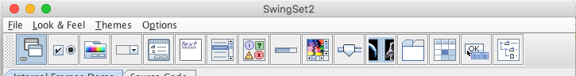

| S.No | Test | Scenario |
|---|---|---|
| 1 | Demo Selection | Move between demos with 'tab' and 'shift-tab', and left and right arrows. Type 'space' to activate a demo.
 |
| Expected Result | ||
| Verify that there is visible focus as you tab (or arrow) between demo icons. Typing 'space' should change the selected demo. | ||
| Note: actual component appearence may vary depending on look and feel. | ||